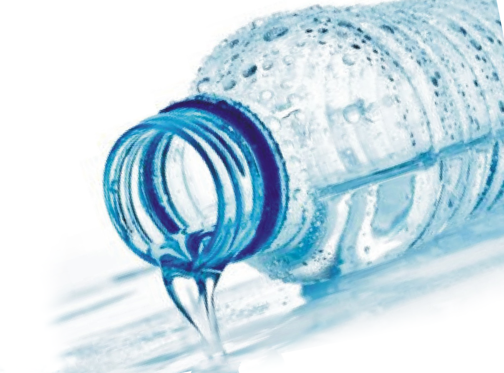

Как проверить качество бутилированной воды самостоятельно
Когда мы покупаем воду в бутылках, мы полагаемся на этикетку и бренд. Но можно ли проверить качество воды в домашних условиях? Хотя полноценный химический анализ возможен только в лаборатории, есть несколько простых способов первичной проверки.
Домашние методы экспресс-проверки
Эти методы не заменяют лабораторный анализ, но помогут вовремя заметить серьезные проблемы:
- Визуальный тест. Налейте воду в прозрачный стеклянный стакан и посмотрите на неё на свету. Вода должна быть абсолютно прозрачной. Любая мутность, хлопья или осадок — признак загрязнения или неправильного хранения.
- Тест на запах. Налейте воду в стакан и дайте ей постоять 5-10 минут. Принюхайтесь. Качественная вода не имеет никакого запаха. Запах хлора, «рыбы» или плесени говорит о низком качестве очистки или старой таре.
- Тест на вкус. Чистая вода имеет нейтральный или слегка сладковатый вкус. Горчинка, металлический или соленый привкус указывают на избыток определенных минералов или примесей.
- Тест на накипь. Вскипятите небольшое количество воды. Если на стенках чайника появился плотный белый налет, значит, вода имеет высокую жесткость (избыток солей кальция и магния).
На что смотреть при покупке (чек-лист)
Чтобы не рисковать здоровьем, обращайте внимание на следующие детали:
- Целостность упаковки. Крышка должна быть плотно запечатана. Любые следы вскрытия — повод отказаться от покупки.
- Дата розлива. Слишком старая вода может изменить свои свойства, даже если она стерильна.
- Маркировка пластика. Используйте воду в таре из безопасного поликарбоната или качественного PET.
- Наличие сертификатов. Надежный производитель всегда может предоставить данные о соответствии воды государственным стандартам (ГОСТ, ДСТУ).
Не гадайте с качеством — выбирайте Crystal Water
Мы берем ответственность за чистоту каждой капли на себя. Многоступенчатая очистка и строгий контроль качества гарантируют безопасность вашей семьи.
Заказать проверенную воду